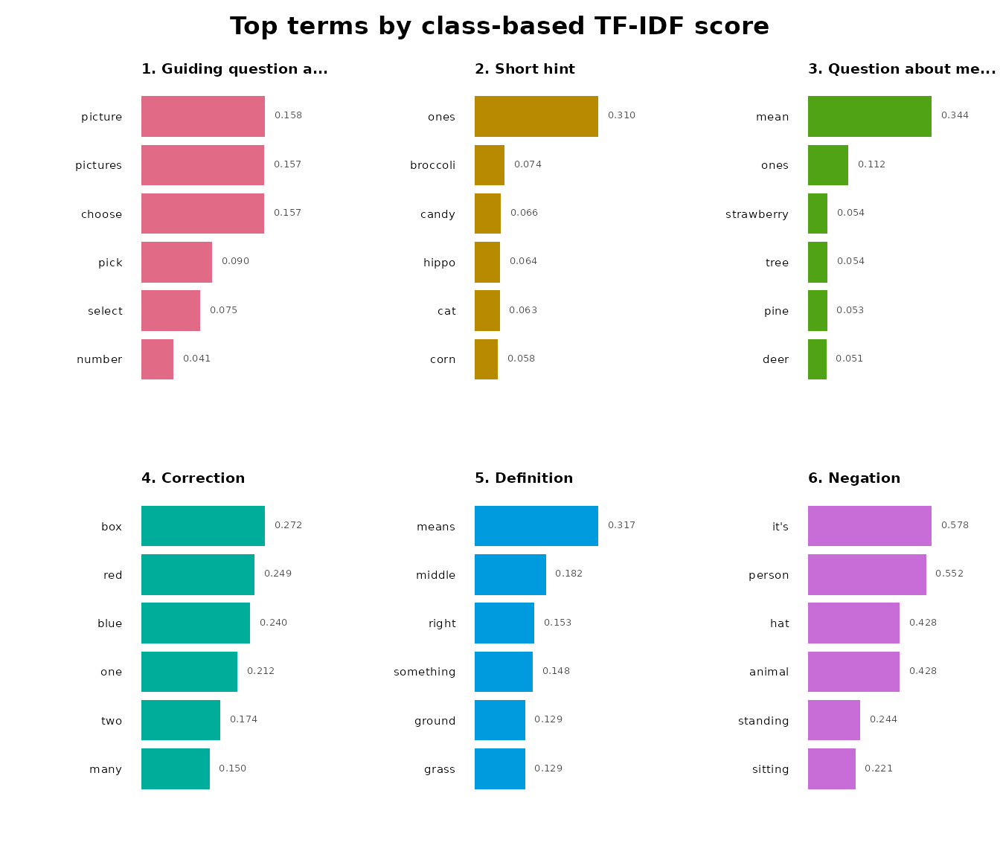
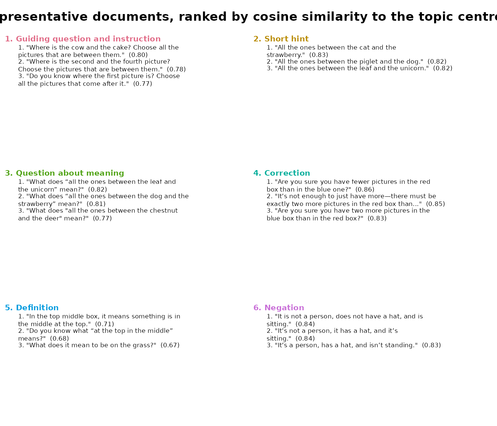
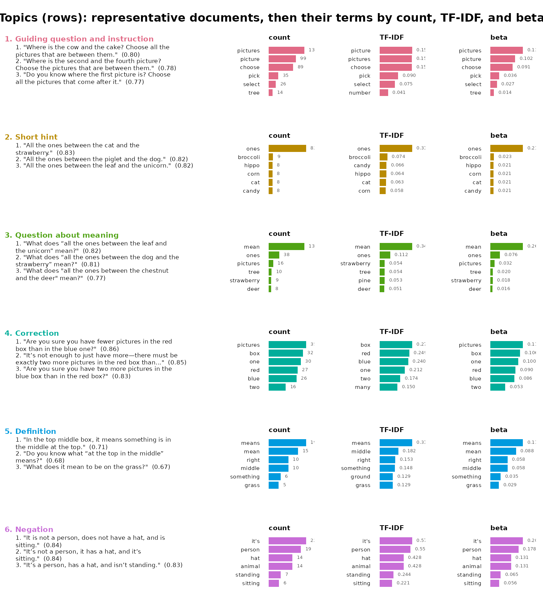

Describing and naming topics
Written by Mohammed Saqr and Sonsoles López-Pernas
Source:vignettes/articles/describing-topics.Rmd
describing-topics.RmdA semantic topic is a region of an embedding space: a set of texts whose vectors lie close to a common center. The region itself has no words, so a topic has to be described before it can be reported, and the description is an interpretation that should be traceable to evidence. Two kinds of evidence are available. The texts nearest the center show what the members of a topic say. The words that are frequent in a topic and rare in the others show how it is phrased. The first defines the topic; the second helps to search and summarize it, and can mislead when it is taken for the definition.
This guide describes the six topics of the feedback model from both kinds of evidence, shows which settings change the words and that none of them changes the topics, and names the topics once they have been read.
library(sbert)
#> sbert 0.6.0: Sentence-BERT embeddings and topic models in R.
#> 14 pinned models (see models()); default: all-MiniLM-L6-v2.
#> A model is downloaded only on request, once, and verified by SHA-256.Data
The model is fitted on the first 600 distinct feedback messages of
feedback_translations, with their bundled embeddings, so
nothing is downloaded.
-
translation: the English text of each message; the modeled text. -
n: the number of times the message occurs in the full corpus. -
feedback_embeddings: one 384-dimensionalall-MiniLM-L6-v2embedding per message, in the order ofcorpus.
corpus <- head(dedupe(feedback_translations, column = "translation"), 600)
topic_model <- topics(corpus, n_topics = 6, column = "translation",
embeddings = feedback_embeddings)
topic_model
#> <sbert_topic_model>
#> documents: 600
#> topics: 6
#> model: precomputed embeddings
#> algorithm: deterministic k-means (Lloyd)
#> topic sizes: 223, 133, 131, 49, 37, 27
#> between/total SS: 22.6%The six topics hold 223, 133, 131, 49, 37 and 27 messages. Why six is discussed in Choosing the number of topics and the granularity.
Which texts show what a topic is?
representatives() returns, for every topic, the messages
that best evidence it, ranked in one of two ways.
-
distanceis the cosine distance from a message to the center of its own topic: 0 for a message at the center, larger for one at the edge. Ranking by distance (rank = "distance") returns the most typical messages. -
marginis the distance to the nearest other topic minus the distance to the message’s own topic. A large margin means that the message is much closer to its own topic than to any other. Ranking by margin (rank = "margin", the default) returns the messages that could belong to no other topic.
The text column is long, so the tables are printed with
knitr::kable(). The most typical messages first:
knitr::kable(representatives(topic_model, n = 3, rank = "distance"),
digits = 2)| topic | rank | document_id | text | distance | margin |
|---|---|---|---|---|---|
| 1 | 1 | 118 | Where is the cow and the cake? Choose all the pictures that are between them. | 0.20 | 0.28 |
| 1 | 2 | 474 | Where is the second and the fourth picture? Choose the pictures that are between them. | 0.22 | 0.19 |
| 1 | 3 | 368 | Do you know where the first picture is? Choose all the pictures that come after it. | 0.23 | 0.21 |
| 2 | 1 | 277 | All the ones between the cat and the strawberry. | 0.17 | 0.28 |
| 2 | 2 | 237 | All the ones between the piglet and the dog. | 0.18 | 0.30 |
| 2 | 3 | 226 | All the ones between the leaf and the unicorn. | 0.18 | 0.23 |
| 3 | 1 | 227 | What does “all the ones between the leaf and the unicorn” mean? | 0.18 | 0.29 |
| 3 | 2 | 87 | What does “all the ones between the dog and the strawberry” mean? | 0.19 | 0.29 |
| 3 | 3 | 479 | What does “all the ones between the chestnut and the deer” mean? | 0.23 | 0.29 |
| 4 | 1 | 218 | Are you sure you have fewer pictures in the red box than in the blue one? | 0.14 | 0.46 |
| 4 | 2 | 62 | It’s not enough to just have more—there must be exactly two more pictures in the red box than in the blue box. | 0.15 | 0.48 |
| 4 | 3 | 68 | Are you sure you have two more pictures in the blue box than in the red box? | 0.17 | 0.40 |
| 5 | 1 | 364 | In the top middle box, it means something is in the middle at the top. | 0.29 | 0.16 |
| 5 | 2 | 28 | Do you know what “at the top in the middle” means? | 0.32 | 0.15 |
| 5 | 3 | 74 | What does it mean to be on the grass? | 0.33 | 0.23 |
| 6 | 1 | 366 | It is not a person, does not have a hat, and is sitting. | 0.16 | 0.50 |
| 6 | 2 | 31 | It’s not a person, it has a hat, and it’s sitting. | 0.16 | 0.47 |
| 6 | 3 | 18 | It’s a person, has a hat, and isn’t standing. | 0.17 | 0.42 |
The most typical messages lie between 0.14 and 0.33 from their centers, and they make each topic readable: guiding questions followed by an instruction (topic 1), short hints (topic 2), questions about the meaning of a phrase (topic 3), corrections (topic 4), explanations of a phrase mixed with questions about one (topic 5), and descriptions built from negations (topic 6).
The same topics ranked by margin:
knitr::kable(representatives(topic_model, n = 3), digits = 2)| topic | rank | document_id | text | distance | margin |
|---|---|---|---|---|---|
| 1 | 1 | 169 | Where is the cat and the princess? Choose all the pictures that are between them. | 0.23 | 0.30 |
| 1 | 2 | 559 | Where is the cup and the balloon? Select all the pictures that are between them. | 0.29 | 0.29 |
| 1 | 3 | 294 | Where is the leafy tree and the flower? Choose all the pictures that are between them. | 0.26 | 0.29 |
| 2 | 1 | 246 | All the ones between the grape and the tram. | 0.26 | 0.31 |
| 2 | 2 | 202 | All the ones between the fly and the cat. | 0.21 | 0.31 |
| 2 | 3 | 356 | All the ones between the cat and the lettuce. | 0.21 | 0.31 |
| 3 | 1 | 482 | What does “all between the plant and the princess” mean? | 0.25 | 0.32 |
| 3 | 2 | 227 | What does “all the ones between the leaf and the unicorn” mean? | 0.18 | 0.29 |
| 3 | 3 | 358 | What does “everything between the deer and the candy” mean? | 0.24 | 0.29 |
| 4 | 1 | 10 | There should be two fewer in the red one than in the blue one. | 0.18 | 0.55 |
| 4 | 2 | 475 | There should be two fewer in the blue one than in the red one. | 0.18 | 0.55 |
| 4 | 3 | 384 | If there should be fewer in the blue box, then how many should be in the red one? | 0.20 | 0.53 |
| 5 | 1 | 72 | “Sitting” means your bottom is on the ground or on a chair. | 0.44 | 0.29 |
| 5 | 2 | 325 | To be on the grass means to stand or lie down on the soft green ground where grass grows. | 0.50 | 0.28 |
| 5 | 3 | 75 | Being on the grass means something is lying or growing on the soft, green ground. | 0.45 | 0.26 |
| 6 | 1 | 380 | This is not a person, it doesn’t have a hat, and it is standing. | 0.17 | 0.53 |
| 6 | 2 | 166 | If it’s an animal, then it’s not a person. | 0.22 | 0.51 |
| 6 | 3 | 464 | This is not a person, it doesn’t have a hat, and it’s sitting. | 0.17 | 0.51 |
The two rankings agree where a topic is compact and well separated. For corrections and negations the margins are 0.40 or more in both tables, the largest of any topic. They disagree where a topic is diffuse. The most typical explanations of a phrase (topic 5) have margins of 0.15 to 0.23, because they also resemble the questions about meaning of topic 3. Ranked by margin, topic 5 is represented by definitions such as “Sitting” means your bottom is on the ground or on a chair, which lie 0.44 to 0.50 from the center but cannot be mistaken for a question. Distance shows the center of a topic; margin shows what separates it from its neighbors. Reading both is the safer description of a diffuse topic.
Which words phrase each topic?
terms() lists the words that distinguish each topic. By
default the score is class-based TF-IDF (c-TF-IDF; Grootendorst, 2022):
the messages of a topic are treated as one document, and a word scores
high when it is frequent in that document and rare across the others.
Each row also gives the word’s frequency in the topic and
beta, its share of the topic’s words.
terms(topic_model, n = 5)
#> topic label term rank
#> 1 1 Where is the cow and the cake? Choose all the pictures... picture 1
#> 2 1 Where is the cow and the cake? Choose all the pictures... pictures 2
#> 3 1 Where is the cow and the cake? Choose all the pictures... choose 3
#> 4 1 Where is the cow and the cake? Choose all the pictures... pick 4
#> 5 1 Where is the cow and the cake? Choose all the pictures... select 5
#> 6 2 All the ones between the cat and the strawberry. ones 1
#> 7 2 All the ones between the cat and the strawberry. broccoli 2
#> 8 2 All the ones between the cat and the strawberry. candy 3
#> 9 2 All the ones between the cat and the strawberry. hippo 4
#> 10 2 All the ones between the cat and the strawberry. cat 5
#> 11 3 What does “all the ones between the leaf and the... mean 1
#> 12 3 What does “all the ones between the leaf and the... ones 2
#> 13 3 What does “all the ones between the leaf and the... strawberry 3
#> 14 3 What does “all the ones between the leaf and the... tree 4
#> 15 3 What does “all the ones between the leaf and the... pine 5
#> 16 4 Are you sure you have fewer pictures in the red box than... box 1
#> 17 4 Are you sure you have fewer pictures in the red box than... red 2
#> 18 4 Are you sure you have fewer pictures in the red box than... blue 3
#> 19 4 Are you sure you have fewer pictures in the red box than... one 4
#> 20 4 Are you sure you have fewer pictures in the red box than... two 5
#> 21 5 In the top middle box, it means something is in the... means 1
#> 22 5 In the top middle box, it means something is in the... middle 2
#> 23 5 In the top middle box, it means something is in the... right 3
#> 24 5 In the top middle box, it means something is in the... something 4
#> 25 5 In the top middle box, it means something is in the... grass 5
#> 26 6 It is not a person, does not have a hat, and is sitting. it's 1
#> 27 6 It is not a person, does not have a hat, and is sitting. person 2
#> 28 6 It is not a person, does not have a hat, and is sitting. animal 3
#> 29 6 It is not a person, does not have a hat, and is sitting. hat 4
#> 30 6 It is not a person, does not have a hat, and is sitting. standing 5
#> score frequency beta
#> 1 0.1581 99 0.1017
#> 2 0.1573 130 0.1336
#> 3 0.1571 89 0.0915
#> 4 0.0903 35 0.0360
#> 5 0.0751 26 0.0267
#> 6 0.3096 82 0.2103
#> 7 0.0742 9 0.0231
#> 8 0.0660 8 0.0205
#> 9 0.0638 8 0.0205
#> 10 0.0628 8 0.0205
#> 11 0.3436 130 0.2610
#> 12 0.1124 38 0.0763
#> 13 0.0545 9 0.0181
#> 14 0.0538 10 0.0201
#> 15 0.0526 8 0.0161
#> 16 0.2724 32 0.1063
#> 17 0.2490 27 0.0897
#> 18 0.2398 26 0.0864
#> 19 0.2120 30 0.0997
#> 20 0.1740 16 0.0532
#> 21 0.3165 19 0.1111
#> 22 0.1818 10 0.0585
#> 23 0.1531 10 0.0585
#> 24 0.1485 6 0.0351
#> 25 0.1290 5 0.0292
#> 26 0.5781 22 0.2056
#> 27 0.5521 19 0.1776
#> 28 0.4284 14 0.1308
#> 29 0.4284 14 0.1308
#> 30 0.2440 7 0.0654The words describe what the messages are about, not what they do. The short hints of topic 2 are described, after ones, by names of pictures (broccoli, candy, hippo) that change from message to message. The negations of topic 6 are described by person, animal and hat, the objects being ruled out, not by the negation itself. Topics 2 and 3 share ones, although one hints and the other asks.
terms() recomputes the words under other settings
without refitting anything. weighting = "bm25" replaces the
inverse-frequency part of the score with the BM25 form, which penalizes
words shared by many topics more strongly (Mendonca & Figueira,
2025):
terms(topic_model, n = 5, weighting = "bm25")
#> topic label term rank
#> 1 1 Where is the cow and the cake? Choose all the pictures... choose 1
#> 2 1 Where is the cow and the cake? Choose all the pictures... picture 2
#> 3 1 Where is the cow and the cake? Choose all the pictures... pictures 3
#> 4 1 Where is the cow and the cake? Choose all the pictures... pick 4
#> 5 1 Where is the cow and the cake? Choose all the pictures... select 5
#> 6 2 All the ones between the cat and the strawberry. ones 1
#> 7 2 All the ones between the cat and the strawberry. broccoli 2
#> 8 2 All the ones between the cat and the strawberry. candy 3
#> 9 2 All the ones between the cat and the strawberry. hippo 4
#> 10 2 All the ones between the cat and the strawberry. cat 5
#> 11 3 What does “all the ones between the leaf and the... mean 1
#> 12 3 What does “all the ones between the leaf and the... ones 2
#> 13 3 What does “all the ones between the leaf and the... strawberry 3
#> 14 3 What does “all the ones between the leaf and the... tree 4
#> 15 3 What does “all the ones between the leaf and the... pine 5
#> 16 4 Are you sure you have fewer pictures in the red box than... box 1
#> 17 4 Are you sure you have fewer pictures in the red box than... red 2
#> 18 4 Are you sure you have fewer pictures in the red box than... blue 3
#> 19 4 Are you sure you have fewer pictures in the red box than... one 4
#> 20 4 Are you sure you have fewer pictures in the red box than... two 5
#> 21 5 In the top middle box, it means something is in the... means 1
#> 22 5 In the top middle box, it means something is in the... middle 2
#> 23 5 In the top middle box, it means something is in the... right 3
#> 24 5 In the top middle box, it means something is in the... something 4
#> 25 5 In the top middle box, it means something is in the... grass 5
#> 26 6 It is not a person, does not have a hat, and is sitting. it's 1
#> 27 6 It is not a person, does not have a hat, and is sitting. person 2
#> 28 6 It is not a person, does not have a hat, and is sitting. animal 3
#> 29 6 It is not a person, does not have a hat, and is sitting. hat 4
#> 30 6 It is not a person, does not have a hat, and is sitting. standing 5
#> score frequency beta
#> 1 0.1387 89 0.0915
#> 2 0.1337 99 0.1017
#> 3 0.1081 130 0.1336
#> 4 0.0868 35 0.0360
#> 5 0.0730 26 0.0267
#> 6 0.2545 82 0.2103
#> 7 0.0727 9 0.0231
#> 8 0.0646 8 0.0205
#> 9 0.0624 8 0.0205
#> 10 0.0613 8 0.0205
#> 11 0.2619 130 0.2610
#> 12 0.0924 38 0.0763
#> 13 0.0532 9 0.0181
#> 14 0.0521 10 0.0201
#> 15 0.0515 8 0.0161
#> 16 0.2625 32 0.1063
#> 17 0.2419 27 0.0897
#> 18 0.2329 26 0.0864
#> 19 0.1987 30 0.0997
#> 20 0.1705 16 0.0532
#> 21 0.3080 19 0.1111
#> 22 0.1778 10 0.0585
#> 23 0.1479 10 0.0585
#> 24 0.1452 6 0.0351
#> 25 0.1259 5 0.0292
#> 26 0.5620 22 0.2056
#> 27 0.5398 19 0.1776
#> 28 0.4196 14 0.1308
#> 29 0.4196 14 0.1308
#> 30 0.2394 7 0.0654reduce_frequent_words = TRUE takes the square root of
the within-topic frequencies before weighting, which keeps a word that a
topic repeats many times from dominating its list:
terms(topic_model, n = 3, reduce_frequent_words = TRUE)
#> topic label term rank score
#> 1 1 Where is the cow and the cake? Choose all the pictures... choose 1 0.519
#> 2 1 Where is the cow and the cake? Choose all the pictures... picture 2 0.496
#> 3 1 Where is the cow and the cake? Choose all the pictures... pick 3 0.476
#> 4 2 All the ones between the cat and the strawberry. ones 1 0.675
#> 5 2 All the ones between the cat and the strawberry. broccoli 2 0.489
#> 6 2 All the ones between the cat and the strawberry. candy 3 0.461
#> 7 3 What does “all the ones between the leaf and the... mean 1 0.672
#> 8 3 What does “all the ones between the leaf and the... pine 2 0.415
#> 9 3 What does “all the ones between the leaf and the... ones 3 0.407
#> 10 4 Are you sure you have fewer pictures in the red box than... box 1 0.835
#> 11 4 Are you sure you have fewer pictures in the red box than... red 2 0.832
#> 12 4 Are you sure you have fewer pictures in the red box than... blue 3 0.816
#> 13 5 In the top middle box, it means something is in the... means 1 0.950
#> 14 5 In the top middle box, it means something is in the... something 2 0.793
#> 15 5 In the top middle box, it means something is in the... grass 3 0.754
#> 16 6 It is not a person, does not have a hat, and is sitting. person 1 1.310
#> 17 6 It is not a person, does not have a hat, and is sitting. it's 2 1.275
#> 18 6 It is not a person, does not have a hat, and is sitting. animal 3 1.184
#> frequency beta
#> 1 89 0.0915
#> 2 99 0.1017
#> 3 35 0.0360
#> 4 82 0.2103
#> 5 9 0.0231
#> 6 8 0.0205
#> 7 130 0.2610
#> 8 8 0.0161
#> 9 38 0.0763
#> 10 32 0.1063
#> 11 27 0.0897
#> 12 26 0.0864
#> 13 19 0.1111
#> 14 6 0.0351
#> 15 5 0.0292
#> 16 19 0.1776
#> 17 22 0.2056
#> 18 14 0.1308With either setting the near-ties at the top of topic 1
(picture, pictures, choose) are reordered,
and choose now leads topic 1. sort_by = "beta"
ranks by the share of the topic instead of by distinctiveness, which
lists the words a topic uses most even when other topics use them
too:
terms(topic_model, n = 3, sort_by = "beta")
#> topic label term rank score
#> 1 1 Where is the cow and the cake? Choose all the pictures... pictures 1 0.1573
#> 2 1 Where is the cow and the cake? Choose all the pictures... picture 2 0.1581
#> 3 1 Where is the cow and the cake? Choose all the pictures... choose 3 0.1571
#> 4 2 All the ones between the cat and the strawberry. ones 1 0.3096
#> 5 2 All the ones between the cat and the strawberry. broccoli 2 0.0742
#> 6 2 All the ones between the cat and the strawberry. candy 3 0.0660
#> 7 3 What does “all the ones between the leaf and the... mean 1 0.3436
#> 8 3 What does “all the ones between the leaf and the... ones 2 0.1124
#> 9 3 What does “all the ones between the leaf and the... pictures 3 0.0378
#> 10 4 Are you sure you have fewer pictures in the red box than... pictures 1 0.1369
#> 11 4 Are you sure you have fewer pictures in the red box than... box 2 0.2724
#> 12 4 Are you sure you have fewer pictures in the red box than... one 3 0.2120
#> 13 5 In the top middle box, it means something is in the... means 1 0.3165
#> 14 5 In the top middle box, it means something is in the... mean 2 0.1155
#> 15 5 In the top middle box, it means something is in the... middle 3 0.1818
#> 16 6 It is not a person, does not have a hat, and is sitting. it's 1 0.5781
#> 17 6 It is not a person, does not have a hat, and is sitting. person 2 0.5521
#> 18 6 It is not a person, does not have a hat, and is sitting. animal 3 0.4284
#> frequency beta
#> 1 130 0.1336
#> 2 99 0.1017
#> 3 89 0.0915
#> 4 82 0.2103
#> 5 9 0.0231
#> 6 8 0.0205
#> 7 130 0.2610
#> 8 38 0.0763
#> 9 16 0.0321
#> 10 35 0.1163
#> 11 32 0.1063
#> 12 30 0.0997
#> 13 19 0.1111
#> 14 15 0.0877
#> 15 10 0.0585
#> 16 22 0.2056
#> 17 19 0.1776
#> 18 14 0.1308Which words should be left out?
Function words are removed with a stop-word list.
stop_words() returns the default English list, and
add extends it with words that carry no meaning in a
particular corpus. In these messages ones, picture and
pictures occur across the exercises and tell little about a
topic:
length(stop_words())
#> [1] 125
feedback_stop_words <- stop_words(add = c("ones", "picture", "pictures"))
terms(topic_model, n = 3, stop_words = feedback_stop_words)
#> topic label term rank
#> 1 1 Where is the cow and the cake? Choose all the pictures... choose 1
#> 2 1 Where is the cow and the cake? Choose all the pictures... pick 2
#> 3 1 Where is the cow and the cake? Choose all the pictures... select 3
#> 4 2 All the ones between the cat and the strawberry. broccoli 1
#> 5 2 All the ones between the cat and the strawberry. candy 2
#> 6 2 All the ones between the cat and the strawberry. hippo 3
#> 7 3 What does “all the ones between the leaf and the... mean 1
#> 8 3 What does “all the ones between the leaf and the... strawberry 2
#> 9 3 What does “all the ones between the leaf and the... tree 3
#> 10 4 Are you sure you have fewer pictures in the red box than... box 1
#> 11 4 Are you sure you have fewer pictures in the red box than... red 2
#> 12 4 Are you sure you have fewer pictures in the red box than... blue 3
#> 13 5 In the top middle box, it means something is in the... means 1
#> 14 5 In the top middle box, it means something is in the... middle 2
#> 15 5 In the top middle box, it means something is in the... right 3
#> 16 6 It is not a person, does not have a hat, and is sitting. it's 1
#> 17 6 It is not a person, does not have a hat, and is sitting. person 2
#> 18 6 It is not a person, does not have a hat, and is sitting. animal 3
#> score frequency beta
#> 1 0.1876 89 0.1196
#> 2 0.1101 35 0.0470
#> 3 0.0922 26 0.0349
#> 4 0.0888 9 0.0292
#> 5 0.0789 8 0.0260
#> 6 0.0762 8 0.0260
#> 7 0.3500 130 0.2955
#> 8 0.0581 9 0.0205
#> 9 0.0570 10 0.0227
#> 10 0.2945 32 0.1231
#> 11 0.2705 27 0.1038
#> 12 0.2605 26 0.1000
#> 13 0.2991 19 0.1118
#> 14 0.1726 10 0.0588
#> 15 0.1440 10 0.0588
#> 16 0.5427 22 0.2056
#> 17 0.5209 19 0.1776
#> 18 0.4052 14 0.1308Without them, topic 1 is described by the verbs of its instructions (choose, pick, select) and topic 2 by its picture names alone.
stem = TRUE merges inflected forms under one Porter
stem, so picture and pictures count as one word. It
needs the SnowballC package:
terms(topic_model, n = 3, stem = TRUE)
#> topic label term rank
#> 1 1 Where is the cow and the cake? Choose all the pictures... pictures 1
#> 2 1 Where is the cow and the cake? Choose all the pictures... choose 2
#> 3 1 Where is the cow and the cake? Choose all the pictures... pick 3
#> 4 2 All the ones between the cat and the strawberry. ones 1
#> 5 2 All the ones between the cat and the strawberry. broccoli 2
#> 6 2 All the ones between the cat and the strawberry. candy 3
#> 7 3 What does “all the ones between the leaf and the... mean 1
#> 8 3 What does “all the ones between the leaf and the... ones 2
#> 9 3 What does “all the ones between the leaf and the... strawberry 3
#> 10 4 Are you sure you have fewer pictures in the red box than... box 1
#> 11 4 Are you sure you have fewer pictures in the red box than... red 2
#> 12 4 Are you sure you have fewer pictures in the red box than... blue 3
#> 13 5 In the top middle box, it means something is in the... mean 1
#> 14 5 In the top middle box, it means something is in the... middle 2
#> 15 5 In the top middle box, it means something is in the... right 3
#> 16 6 It is not a person, does not have a hat, and is sitting. it's 1
#> 17 6 It is not a person, does not have a hat, and is sitting. person 2
#> 18 6 It is not a person, does not have a hat, and is sitting. hat 3
#> score frequency beta
#> 1 0.2063 229 0.2354
#> 2 0.1571 89 0.0915
#> 3 0.0903 35 0.0360
#> 4 0.2732 89 0.2282
#> 5 0.0742 9 0.0231
#> 6 0.0660 8 0.0205
#> 7 0.3170 131 0.2631
#> 8 0.1034 43 0.0863
#> 9 0.0545 9 0.0181
#> 10 0.2834 34 0.1130
#> 11 0.2490 27 0.0897
#> 12 0.2398 26 0.0864
#> 13 0.2396 34 0.1988
#> 14 0.1818 10 0.0585
#> 15 0.1531 10 0.0585
#> 16 0.5781 22 0.2056
#> 17 0.5521 19 0.1776
#> 18 0.4284 14 0.1308Numbers and Roman numerals are filtered with
numbers = "remove" and
roman_numerals = "remove", and section numbering with
section_numbers = "remove". The feedback messages contain
no digits:
A small example with four invented reports shows the effect. The embeddings are two-dimensional and made up, and serve only to put the first two and the last two reports in different topics:
reports <- c("Enrolment fell in 2020 and 2021.",
"Enrolment fell again in 2021, phase II.",
"Schools reopened in 2022 after closures.",
"Schools reopened and enrolment rose in 2022, phase III.")
toy_embeddings <- rbind(c(1, 0), c(0.9, 0.1), c(0, 1), c(0.1, 0.9))
toy_model <- topics(reports, n_topics = 2, embeddings = toy_embeddings)
terms(toy_model, n = 4)
#> topic label term rank score frequency beta
#> 1 1 Enrolment fell in 2020 and 2021. 2021 1 0.398 2 0.2222
#> 2 1 Enrolment fell in 2020 and 2021. fell 2 0.398 2 0.2222
#> 3 1 Enrolment fell in 2020 and 2021. enrolment 3 0.326 2 0.2222
#> 4 1 Enrolment fell in 2020 and 2021. 2020 4 0.266 1 0.1111
#> 5 2 Schools reopened in 2022 after closures. 2022 1 0.326 2 0.1818
#> 6 2 Schools reopened in 2022 after closures. reopened 2 0.326 2 0.1818
#> 7 2 Schools reopened in 2022 after closures. schools 3 0.326 2 0.1818
#> 8 2 Schools reopened in 2022 after closures. closures 4 0.218 1 0.0909
terms(toy_model, n = 4, numbers = "remove", roman_numerals = "remove")
#> topic label term rank score frequency beta
#> 1 1 Enrolment fell in 2020 and 2021. fell 1 0.579 2 0.400
#> 2 1 Enrolment fell in 2020 and 2021. enrolment 2 0.461 2 0.400
#> 3 1 Enrolment fell in 2020 and 2021. phase 3 0.289 1 0.200
#> 4 2 Schools reopened in 2022 after closures. reopened 1 0.362 2 0.250
#> 5 2 Schools reopened in 2022 after closures. schools 2 0.362 2 0.250
#> 6 2 Schools reopened in 2022 after closures. closures 3 0.252 1 0.125
#> 7 2 Schools reopened in 2022 after closures. rose 4 0.252 1 0.125With the default settings the years lead both topics’ lists; removed, the words that describe the events (reopened, fell) move up. These filters apply to the terms only. The text and the embeddings are untouched; to clean the text itself before encoding, see Preparing and cleaning a corpus.
Do the term settings change the topics?
They do not. The topics are formed from the embeddings, and the terms are computed afterwards from the topic assignments and the text. Fitting the model again with BM25 weighting and the extended stop words, and cross-tabulating the topic of every message under the two fits, shows the same partition:
retuned <- topics(corpus, n_topics = 6, column = "translation",
embeddings = feedback_embeddings, weighting = "bm25",
stop_words = feedback_stop_words)
assignments <- merge(as.data.frame(topic_model), as.data.frame(retuned),
by = "document_id", suffixes = c("_default", "_retuned"))
with(assignments, table(topic_default, topic_retuned))
#> topic_retuned
#> topic_default 1 2 3 4 5 6
#> 1 223 0 0 0 0 0
#> 2 0 133 0 0 0 0
#> 3 0 0 131 0 0 0
#> 4 0 0 0 49 0 0
#> 5 0 0 0 0 37 0
#> 6 0 0 0 0 0 27Every message keeps its topic: the table is diagonal, with 223, 133,
131, 49, 37 and 27 messages. The term settings change how a topic is
worded, never which messages it holds, so they can be tuned for
readability without reopening the analysis. Fitting with them, rather
than calling terms(), also changes the terms stored in the
model, which the plots and label = "terms" use.
How should the topics be labeled?
By default topics() labels each topic with its most
central message, cut at 60 characters. label = "terms"
labels each topic by its three top terms instead:
term_labeled <- topics(corpus, n_topics = 6, column = "translation",
embeddings = feedback_embeddings, label = "terms")
topic_sizes(term_labeled)
#> topic label n_documents proportion
#> 1 1 picture / pictures / choose 223 0.3717
#> 2 2 ones / broccoli / candy 133 0.2217
#> 3 3 mean / ones / strawberry 131 0.2183
#> 4 4 box / red / blue 49 0.0817
#> 5 5 means / middle / right 37 0.0617
#> 6 6 it's / person / animal 27 0.0450Term labels are compact but repeat the weakness of the terms: the labels of topics 2 and 3 both contain ones, and topic 6 is labeled by the objects it mentions. A message label shows a real member of the topic.
keywords() extracts keywords from single documents (the
KeyBERT design: candidate words and phrases are ranked by the cosine
similarity of their embeddings to the document’s embedding, then
selected by maximal marginal relevance; Carbonell & Goldstein,
1998). It encodes every candidate, so it needs a downloaded model and is
not run here:
model_download()
keywords("Where is the cow and the cake? Choose all the pictures that are between them.",
n = 5, ngrams = 2)Once the representatives have been read, name_topics()
gives the topics names that state what they are, one per topic in topic
order. The names replace the labels in every table and plot; nothing is
refitted.
topic_model <- name_topics(topic_model, c(
"Guiding question and instruction", "Short hint",
"Question about meaning", "Correction", "Definition", "Negation"
))
topic_sizes(topic_model)
#> topic label n_documents proportion
#> 1 1 Guiding question and instruction 223 0.3717
#> 2 2 Short hint 133 0.2217
#> 3 3 Question about meaning 131 0.2183
#> 4 4 Correction 49 0.0817
#> 5 5 Definition 37 0.0617
#> 6 6 Negation 27 0.0450How coherent are the descriptions?
summary() reports the size of every topic and the
coherence of its top ten terms, measured as normalized pointwise mutual
information (NPMI; Bouma, 2009): whether the words that describe a topic
occur together in its messages, from -1 to 1.
summary(topic_model)
#> Semantic topic model summary
#> documents: 600
#> topics: 6
#> model: precomputed embeddings
#> between/total SS: 22.6%
#> mean npmi coherence: -0.1044
#> topic diversity: 0.917 (top 10 terms)
#>
#> topic label n_documents proportion coherence
#> 1 Guiding question and instruction 223 0.37167 -0.2368
#> 2 Short hint 133 0.22167 -0.4150
#> 3 Question about meaning 131 0.21833 -0.2564
#> 4 Correction 49 0.08167 0.3011
#> 5 Definition 37 0.06167 -0.2043
#> 6 Negation 27 0.04500 0.1849Coherence is highest for the corrections (0.301), whose messages
repeat box, red and blue, and lowest for the
short hints (-0.415), whose picture names rarely occur together. Low
coherence here does not mean a poor topic: the hints are a clear kind of
feedback whose words vary by design. Coherence evaluates the
description, not the topic. coherence() returns the scores
as a table. measure = "umass" gives UMass coherence instead
(Mimno et al., 2011), a log ratio of co-occurrence counts that is
usually negative and is read the same way, higher being more
coherent:
coherence(topic_model, measure = "umass")
#> topic label measure n_terms coherence
#> 1 1 Guiding question and instruction umass 10 -2.75
#> 2 2 Short hint umass 10 -2.66
#> 3 3 Question about meaning umass 10 -2.67
#> 4 4 Correction umass 10 -1.45
#> 5 5 Definition umass 10 -1.90
#> 6 6 Negation umass 10 -1.48How are topics shown in figures?
type = "terms" draws the top terms of every topic as
bars:
plot(topic_model, type = "terms", n_terms = 6)
type = "representatives" draws the representative
messages, with their similarity to the center in parentheses:
plot(topic_model, type = "representatives", n_representatives = 3)
type = "fit" combines both, one row per topic, and is
the figure to report:
plot(topic_model, type = "fit", n_terms = 6, n_representatives = 3)
When to use which
| Question | Verb |
|---|---|
| What does a topic say? | representatives(rank = "distance") |
| What separates it from its neighbors? | representatives(rank = "margin") |
| How is it worded? |
terms(), terms(weighting = "bm25"),
terms(sort_by = "beta")
|
| Which words to drop? |
stop_words(add = ), numbers = "remove",
stem = TRUE
|
| Keywords of one document |
keywords() (needs a model) |
| Give the topics names |
name_topics(), or
topics(label = "terms")
|
| How coherent are the words? |
summary(), coherence()
|
| Figures | plot(type = "terms" / "representatives" / "fit") |
| Every table | as.data.frame(topic_model, what = "terms" / "representatives") |
New messages are assigned to the named topics in Assigning new documents and topic mixtures, and the complete analysis of the feedback corpus is in Semantic topic modeling with Sentence-BERT.
References
Bouma, G. (2009). Normalized (pointwise) mutual information in collocation extraction. Proceedings of GSCL, 31–40.
Carbonell, J., & Goldstein, J. (1998). The use of MMR, diversity-based reranking for reordering documents and producing summaries. Proceedings of SIGIR 1998, 335–336. https://doi.org/10.1145/290941.291025
Grootendorst, M. (2022). BERTopic: Neural topic modeling with a class-based TF-IDF procedure. arXiv:2203.05794.
Mendonca, M., & Figueira, A. (2025). Modeling political discourse with Sentence-BERT and BERTopic. arXiv:2510.22904.
Mimno, D., Wallach, H. M., Talley, E., Leenders, M., & McCallum, A. (2011). Optimizing semantic coherence in topic models. Proceedings of EMNLP 2011, 262–272.